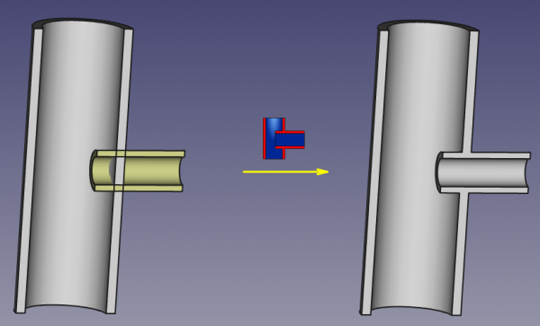
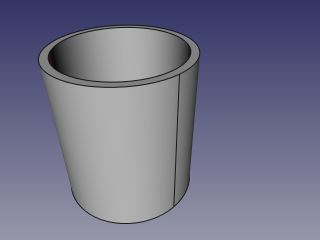
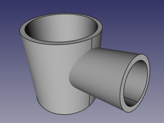
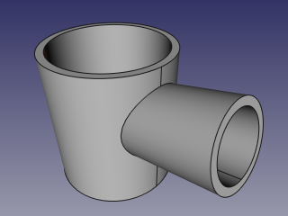
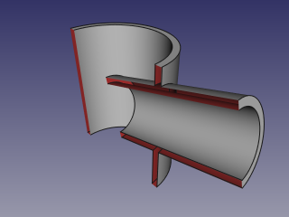
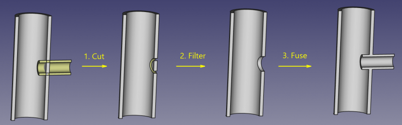

Descrizione
Lo strumento Incastra incorpora un oggetto vuoto internamente in un altro oggetto analogo, ad esempio, un tubo in un altro tubo.

Uso
- Selezionare prima l'oggetto Base, e poi l'oggetto Tool da incastrare.
L'ordine di selezione è importante. È sufficiente selezionare una qualsiasi sotto-forma di ciascun oggetto (ad esempio, delle facce).
- Invocare il comando Incastra.
Viene creato un oggetto Parte JoinFeature, con la modalità, Mode, impostata su 'Embed'. Nella vista 3D viene mostrato il risultato dell'incastro, e gli oggetti originali sono nascosti.
Proprietà
Base
- DATABase: Riferisce l'oggetto di base (l'oggetto in cui si vuole incastrare l'altro oggetto). L'oggetto deve essere un solido unico.
- DATATool: Riferisce l'oggetto da usare come utensile (l'oggetto da incastrare). L'oggetto può essere un solido unico, oppure un composto valido di solidi.
- DATAMode: Stabilisce la modalità dell'operazione di Giunzione, che in questo caso è uguale a 'Connect' (cambiando modalità si trasforma lo strumento in uno strumento Giunzione diverso). Il valore 'bypass' può essere usato per disabilitare temporaneamente i lunghi calcoli (in questo caso, viene creato un oggetto Composto formato dagli oggetti Base e Tool , che è un'operazione veloce).
- DATARefine: Stabilisce se alla forma finale deve essere applicata l'operazione Affina, oppure no. Il valore di default è stabilito dalla casella di controllo 'Affina automaticamente la forma dopo l'operazione booleana' nelle preferenze di PartDesign. Quando la proprietà Mode è impostata su 'bypass', Affina viene ignorato (Refine non è mai applicato).
Esempio
- Creare un tubo applicando uno Spessore a un cilindro:

- Creare un nuovo tubo di diametro inferiore e posizionarlo in modo da perforare la parete del primo tubo:

- Selezionare il primo tubo, poi il secondo tubo (l'ordine di selezione è importante), infine selezionare l'opzione 'Incastra' dalla barra degli strumenti a discesa degli strumenti Giunzione.

- Per visualizzare gli interni, utilizzare uno degli strumenti di sezione: Piano di taglio del menu Visualizza, Piano di sezione di Arch, o Piano di taglio di Arch. Nell'immagine seguente, è stato utilizzato il Piano di sezione di Arch.

Algoritmo
Gli algoritmi sottostanti agli strumenti di Giunzione sono abbastanza semplici, ed è importante comprenderli per utilizzarli correttamente.
1. L'oggetto Base viene tagliato dall'oggetto Tool con una operazione booleana. La forma risultante è un composto, cioè un insieme di solidi non intersecanti (tipicamente, due).
2. Il composto risultante viene filtrato e viene conservato solo il solido più grande.
3. Il solido più grande viene unito con l'oggetto Tool tramite una operazione booleana.
4. Se la proprietà Refine è impostata su true, la forma risultante viene affinata.

Note
- Se dopo il passaggio 1, l'oggetto rimane ancora in un pezzo unico, il risultato dell'incastro è equivalente a una unione booleana di Base con Tool, ma richiede più tempo per il calcolo.
- Attualmente, quando viene fornito un composto come Base lo strumento produce un risultato inaspettato. Questo potrà essere modificato in futuro.
- Poiché il pezzo più grande è determinato confrontando i volumi, lo strumento può funzionare solo con i solidi. Questo potrà essere modificato in futuro.
Script
Lo strumento Giunzione può essere utilizzato nelle macro e dalla console di Python tramite la seguente funzione:
JoinFeatures.makePartJoinFeature(name = 'Embed', mode = 'Embed')
- Crea una funzione Embed vuota (o altra funzione Join, secondo la modalità passata). Le proprietà Base e Tool devono essere assegnate in modo esplicito, in seguito.
- Restituisce l'oggetto appena creato.
Esempio:
import JoinFeatures
j = JoinFeatures.makePartJoinFeature(name = 'Embed', mode = 'Embed' )
j.Base = FreeCADGui.Selection.getSelection()[0]
j.Tool = FreeCADGui.Selection.getSelection()[1]
Lo strumento è implementato in Python, vedere /Mod/Part/JoinFeatures.py in cui è installato FreeCAD.
Versione
Lo strumento è stato introdotto in FreeCAD v0.16.5069
{kind=link}
{kind=link}
{kind=link}
{kind=link}
{kind=link}
{kind=link}
{kind=link}